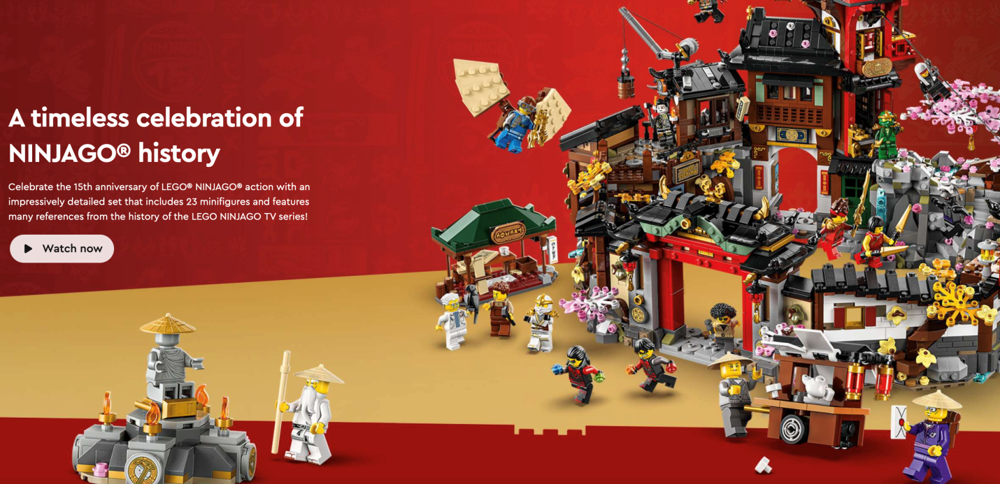
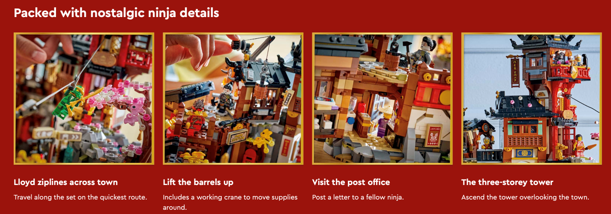
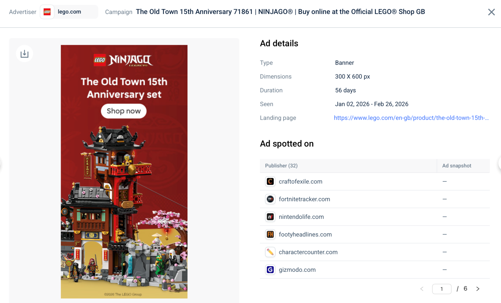
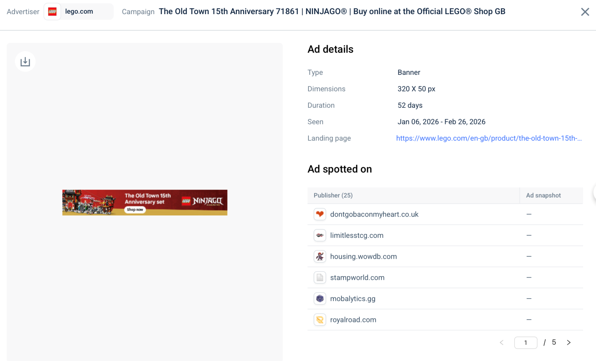
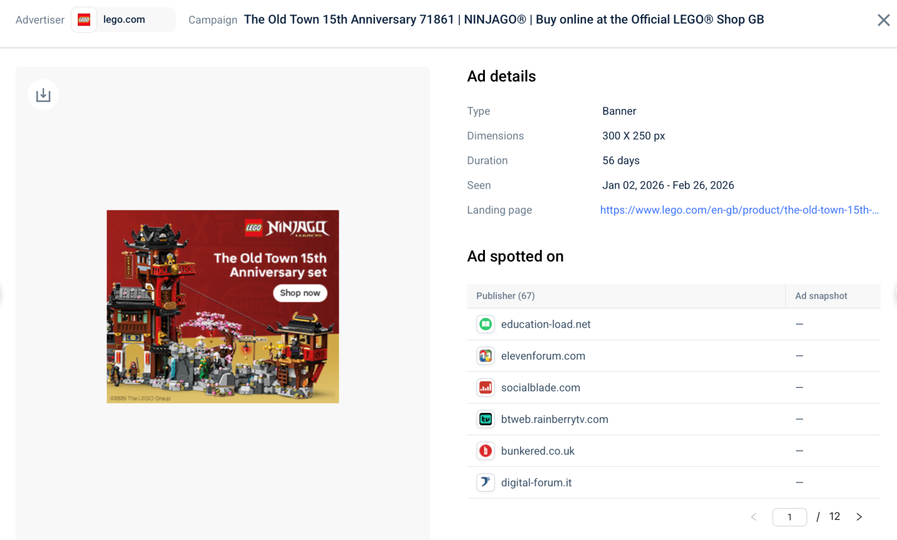
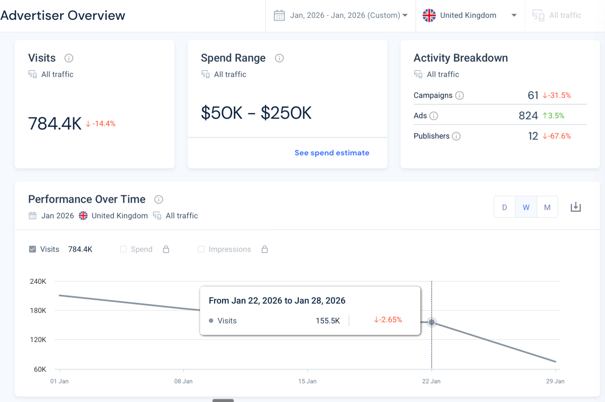
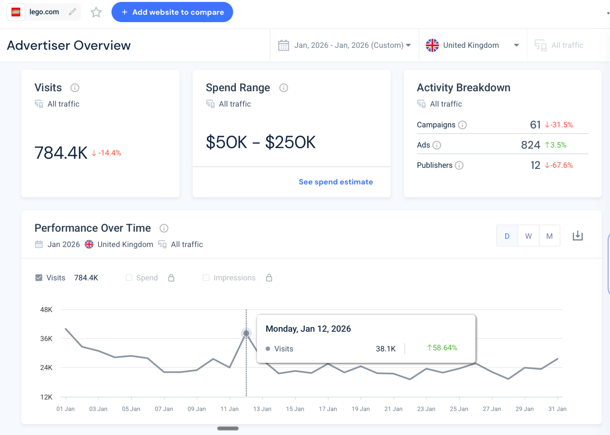
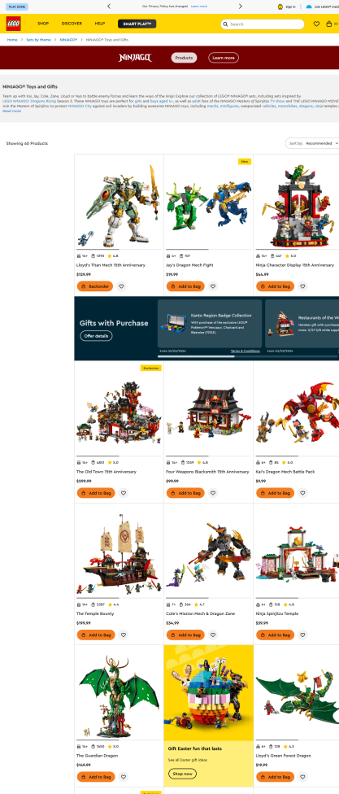
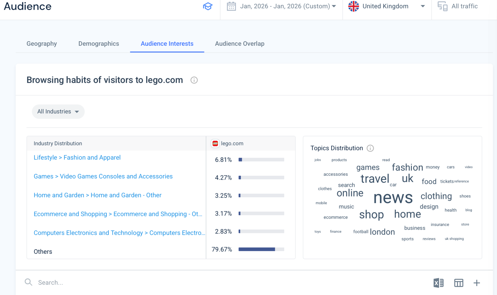
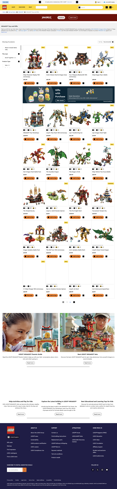

Blog 2: LEGO NINJAGO The Old Town 15th Anniversary Campaign Analysis
By Ramune Matulyte
Published: March 2026
When a beloved franchise celebrates a milestone, the marketing campaign needs to honour the past while driving future sales. LEGO's NINJAGO 15th Anniversary campaign, featuring The Old Town set (71741), does exactly that. Using Similarweb data and campaign analysis, I've examined how LEGO leveraged nostalgia to engage fans during January-February 2026.
The Campaign: Nostalgia as a Strategic Asset
The centrepiece of the campaign is The Old Town 15th Anniversary set an impressively detailed 4,851-piece build including 23 minifigures and references spanning the entire NINJAGO TV series history.

Figure 1: NINJAGO 15th Anniversary promotional creative
The ad creative masterfully balances two appeals:
- For existing fans: "Celebrate the 15th anniversary of LEGO NINJAGO action" with "23 minifigures" and "many references from the history of the LEGO NINJAGO TV series"
- For new audiences: "Travel along the set on the quickest route" and "Visit the post office" playful features that showcase play value
As Percy (2023) notes in Strategic Integrated Marketing Communications, effective campaigns must balance brand heritage with contemporary relevance. LEGO achieves this by framing nostalgia not as backward-looking, but as a rich world new fans can discover.
The landing page reinforces this duality, featuring detailed descriptions of interactive elements: "Lloyd ziplines across town," "Lift the barrels up," "The three-storey tower."

Figure 2: Landing page feature details
Media Placement: Reaching the Right Audience
The campaign ran from January 2 to February 26, 2026 a 56-day flight strategically positioned around key shopping moments:
- Post-Christmas gift card redemption (January)
- Chinese New Year (January 29, 2026)
- Lead-in to Easter gifting (late March)

Figure 3: Ad details showing 56-day duration
The media placement reveals sophisticated targeting:
|
Publisher Type |
Examples |
Rationale |
|
Gaming sites |
fortnitetracker.com, mobalytics.gg |
NINJAGO fans = gamers |
|
Hobbyist forums |
limitlesstcg.com, housing.wowdb.com |
Collectors = high engagement |
|
Niche communities |
stampworld.com, bunkered.co.uk |
Broader reach to hobbyists |
This approach aligns with Pickton and Broderick's (2005) concept of integrated marketing communications reaching audiences through multiple touchpoints that share a unified message.
Similarweb Data: Did the Campaign Drive Traffic?
The advertiser overview shows LEGO's display campaign performance during January 2026:



Figure 4: Advertiser Overview - January 2026 performance
|
Metric |
Value |
Trend |
|
Campaigns |
61 |
↓ 31.5% |
|
Ads |
824 |
↑ 3.5% |
|
Publishers |
12 |
↓ 67.6% |
This suggests LEGO concentrated its spend on fewer publishers but with more ads per publisher a focused strategy rather than spray-and-pray.
The performance over time chart reveals an interesting pattern:

Figure 5: Performance Over Time - January 2026
Visits peaked around January 22-28, 2026, reaching 155.5K weekly visits a 2.65% increase. What drove this spike?
The Chinese New Year Connection
January 29, 2026, marked the Year of the Horse. The Old Town set features:
- Traditional architecture
- A three-storey tower
- Market stalls
- Multiple minifigures in ceremonial/period dress
While not explicitly marketed as a Chinese New Year set, the aesthetic aligns perfectly with gifting for the holiday. LEGO's colour palette reds, golds, and traditional building designs resonates with CNY symbolism of prosperity and family.

Figure 6: NINJAGO product page showing The Old Town set
As Kotler and Armstrong (2013) observe in Principles of Marketing, successful brands create campaigns that resonate across multiple cultural moments without over-claiming any single one.
Audience Insights: Who Engaged?
The audience data reveals interesting browsing habits:

Figure 7: Audience Interests - lego.com visitors
|
Industry |
Percentage |
|
Fashion and Apparel |
6.81% |
|
Video Games |
4.27% |
|
Home and Garden |
3.25% |
|
E-commerce |
3.17% |
|
Technology |
2.83% |
This confirms NINJAGO's audience extends beyond "just toys" they're gamers, fashion-conscious, tech-savvy consumers. The campaign's placement on gaming sites (fortnitetracker.com, mobalytics.gg) was precisely targeted.
The User Journey: From Ad to Purchase
Tracing the user journey reveals a seamless experience:
Step 1: Banner ad 300x600 or 320x50 creative featuring The Old Town set with "Shop now" CTA
Step 2: Landing page NINJAGO category page showing 60 products, with The Old Town prominently featured

Figure 8: NINJAGO product page
Step 3: Product page Detailed imagery, specifications, and "Add to Bag" button
The journey is frictionless three clicks from impression to purchase. Evans (2017) in Bottlenecks argues that reducing cognitive load in user journeys significantly improves conversion. LEGO's approach minimises decision points while maximising inspiration.
Strategic Recommendations
What LEGO Did Well:
- Multi-generational targeting the campaign appeals to adult collectors (23 minifigures, detailed build) and children (play features, zipline)
- Cultural resonance The January-February timing captures Chinese New Year gifting without explicit cultural appropriation
- Focused media spend Concentrating on 12 publishers with 824 ads suggests deep partnerships rather than shallow reach
- Nostalgic storytelling "15th Anniversary" frames the set as collectible, justifying premium pricing (£299.99)
Opportunities for Improvement:
- Extend campaign duration with NINJAGO: Dragons Rising Season 3 launching in 2025, the campaign could have stretched into March to capture Easter gifting
- User-generated content integration Malthouse et al. (2016) demonstrate that UGC drives engagement. LEGO could encourage fans to share their Old Town builds with a competition
- Email follow-up Capture ad-clickers who didn't purchase with abandoned browse emails featuring related sets
- Retargeting with series content Users who clicked but didn't buy could be retargeted with Dragons Rising video content to build emotional connection
Conclusion
LEGO's NINJAGO 15th Anniversary campaign demonstrates sophisticated understanding of its audience balancing nostalgia for long-time fans with accessibility for new ones. The focused media placement, seamless user journey, and cultural timing around Chinese New Year created a campaign that performed strongly, with traffic peaking in late January.
As Schultz, Tannenbaum and Lauterborn (1993) argued in their foundational work on integrated marketing communications, consistency across touchpoints builds brand equity. LEGO's campaign delivers exactly that a unified celebration of 15 years of NINJAGO that feels both commemorative and commercial, past-focused and future-ready.
References
- Evans, D.C. (2017) Bottlenecks: aligning UX design with user psychology. Berkeley: Apress.
- Kotler, P. and Armstrong, G. (2013) Principles of Marketing. 15th edn. Pearson Education.
- Malthouse, E.C., Calder, B.J., Kim, S.J. and Vandenbosch, M. (2016) 'Evidence that user-generated content that produces engagement increases purchase behaviours', Journal of Marketing Management, 32(5-6), pp. 427-444.
- Percy, L. (2023) Strategic Integrated Marketing Communications. 4th edn. London: Routledge.
- Pickton, D. and Broderick, A. (2005) Integrated Marketing Communications. 2nd edn. Harlow: Pearson Education.
- Schultz, D.E., Tannenbaum, S.I. and Lauterborn, R.F. (1993) Integrated Marketing Communications: Putting it Together & Making it Work. Lincolnwood: NTC Books.
- Similarweb (2026). Website Performance. [online] Similarweb website. Available at: https://pro.similarweb.com/#/digitalsuite/websiteanalysis/overview/website-performance/.